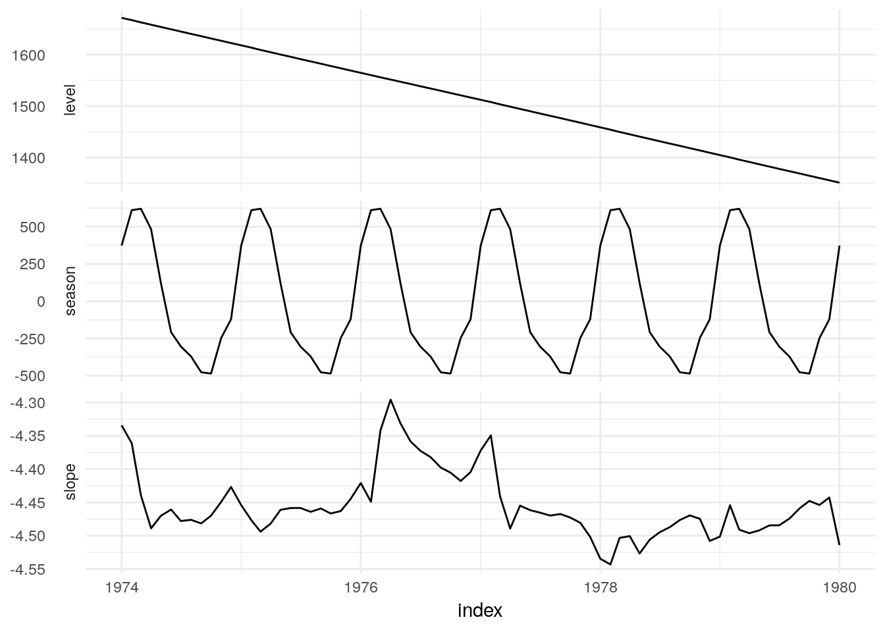

4 Accessing model elements
4.1 Display
The print and summary methods are standard displays for fitted models. The print method typically displays a limited amount of key information, such as the model that was fit, and the estimated coefficients. The summary function extends the print method with a more detailed summary of fit, which may include measures for goodness of fit, and significance of model terms.
As fable naturally supports batch/multiple forecasting, the print method is standardised for any number of models. A very short model specific display can be defined using the model_sum generic, which is shown in the mable.
library(tsibbledata)
ets_fit <- UKLungDeaths %>%
model(ETS(mdeaths))## # A mable: 1 model
## `ETS(mdeaths)`
## <model>
## 1 ETS(M,A,A)The summary method can then be used to reveal more information about this model, such as fitted parameters and goodness of fit. Ideally this information would also be standardised into a tabular form for batch modelling, although this is currently not the case.
ets_fit %>%
summary## ETS(M,A,A)
##
## Smoothing parameters:
## alpha = 0.0002065548
## beta = 0.0001865257
## gamma = 0.000118306
##
## Initial states:
## l b s1 s2 s3 s4 s5
## 1671.676 -4.334248 373.1746 -121.3157 -246.1697 -484.8581 -476.2192
## s6 s7 s8 s9 s10 s11 s12
## -370.1939 -303.5806 -207.384 122.0022 483.3319 620.3601 610.8525
##
##
## sigma: 0.0951
##
## AIC AICc BIC
## 1033.474 1044.807 1072.1774.2 Fitted values and residuals
Accessors for fitted values and residuals return a tsibble containing the index from the original data, with a measured variables for .fitted values and .resids. If the mable contains more than one model, the resulting object maintains and respects the key structure.
ets_fit %>%
fitted## Selecting index: "index"## # A tsibble: 72 x 3 [1M]
## # Key: .model [1]
## .model .fitted index
## <chr> <dbl> <mth>
## 1 ETS(mdeaths) 2278. 1974 Jan
## 2 ETS(mdeaths) 2283. 1974 Feb
## 3 ETS(mdeaths) 2142. 1974 Mar
## 4 ETS(mdeaths) 1776. 1974 Apr
## 5 ETS(mdeaths) 1442. 1974 May
## 6 ETS(mdeaths) 1341. 1974 Jun
## 7 ETS(mdeaths) 1270. 1974 Jul
## 8 ETS(mdeaths) 1160. 1974 Aug
## 9 ETS(mdeaths) 1147. 1974 Sep
## 10 ETS(mdeaths) 1381. 1974 Oct
## # ... with 62 more rowsets_fit %>%
residuals## Selecting index: "index"## # A tsibble: 72 x 3 [1M]
## # Key: .model [1]
## .model .resid index
## <chr> <dbl> <mth>
## 1 ETS(mdeaths) -0.0633 1974 Jan
## 2 ETS(mdeaths) -0.184 1974 Feb
## 3 ETS(mdeaths) -0.124 1974 Mar
## 4 ETS(mdeaths) 0.0569 1974 Apr
## 5 ETS(mdeaths) 0.0346 1974 May
## 6 ETS(mdeaths) -0.0689 1974 Jun
## 7 ETS(mdeaths) 0.00764 1974 Jul
## 8 ETS(mdeaths) -0.0248 1974 Aug
## 9 ETS(mdeaths) 0.0544 1974 Sep
## 10 ETS(mdeaths) 0.0805 1974 Oct
## # ... with 62 more rows4.3 Broom functionality
Common features from a model can also be accessed using verbs from the broom package. Again, key structures that exist within the mable are respected.
ets_fit %>%
augment## # A tsibble: 72 x 5 [1M]
## # Key: .model [1]
## .model index mdeaths .fitted .resid
## <chr> <mth> <dbl> <dbl> <dbl>
## 1 ETS(mdeaths) 1974 Jan 2134 2278. -0.0633
## 2 ETS(mdeaths) 1974 Feb 1863 2283. -0.184
## 3 ETS(mdeaths) 1974 Mar 1877 2142. -0.124
## 4 ETS(mdeaths) 1974 Apr 1877 1776. 0.0569
## 5 ETS(mdeaths) 1974 May 1492 1442. 0.0346
## 6 ETS(mdeaths) 1974 Jun 1249 1341. -0.0689
## 7 ETS(mdeaths) 1974 Jul 1280 1270. 0.00764
## 8 ETS(mdeaths) 1974 Aug 1131 1160. -0.0248
## 9 ETS(mdeaths) 1974 Sep 1209 1147. 0.0544
## 10 ETS(mdeaths) 1974 Oct 1492 1381. 0.0805
## # ... with 62 more rowsets_fit %>%
tidyets_fit %>%
glance## # A tibble: 1 x 11
## .model method formula period sigma logLik AIC AICc BIC MSE
## <chr> <chr> <list> <dbl> <dbl> <dbl> <dbl> <dbl> <dbl> <dbl>
## 1 ETS(m… ETS(M… <sym> 12 0.0951 -500. 1033. 1045. 1072. 24137.
## # ... with 1 more variable: AMSE <dbl>4.4 Components
In many cases, a model can be used to extract features or components from data in a similar way to decomposition methods. We use the components verb to extract a tsibble of data features that have been extracted via modelling or decomposition.
State space models such as ETS are well suited to this functionality as the states often represent features of interest.
UKLungDeaths %>%
model(ETS(mdeaths)) %>%
components## # A tsibble: 73 x 5 [1M]
## # Key: .model [1]
## .model index level slope season
## <chr> <mth> <dbl> <dbl> <dbl>
## 1 ETS(mdeaths) 1974 Jan 1672. -4.33 373.
## 2 ETS(mdeaths) 1974 Feb 1667. -4.36 611.
## 3 ETS(mdeaths) 1974 Mar 1663. -4.44 620.
## 4 ETS(mdeaths) 1974 Apr 1658. -4.49 483.
## 5 ETS(mdeaths) 1974 May 1654. -4.47 122.
## 6 ETS(mdeaths) 1974 Jun 1649. -4.46 -207.
## 7 ETS(mdeaths) 1974 Jul 1645. -4.48 -304.
## 8 ETS(mdeaths) 1974 Aug 1640. -4.48 -370.
## 9 ETS(mdeaths) 1974 Sep 1636. -4.48 -476.
## 10 ETS(mdeaths) 1974 Oct 1632. -4.47 -485.
## # ... with 63 more rows
It may also be worth storing how these components can be used to produce the response, which can be used for decomposition modelling.